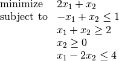

Solving a linear program¶
Linear programs can be specified via the solvers.lp() function.
As an example, we can solve the problem

as follows:
>>> from cvxopt import matrix, solvers
>>> A = matrix([ [-1.0, -1.0, 0.0, 1.0], [1.0, -1.0, -1.0, -2.0] ])
>>> b = matrix([ 1.0, -2.0, 0.0, 4.0 ])
>>> c = matrix([ 2.0, 1.0 ])
>>> sol=solvers.lp(c,A,b)
pcost dcost gap pres dres k/t
0: 2.6471e+00 -7.0588e-01 2e+01 8e-01 2e+00 1e+00
1: 3.0726e+00 2.8437e+00 1e+00 1e-01 2e-01 3e-01
2: 2.4891e+00 2.4808e+00 1e-01 1e-02 2e-02 5e-02
3: 2.4999e+00 2.4998e+00 1e-03 1e-04 2e-04 5e-04
4: 2.5000e+00 2.5000e+00 1e-05 1e-06 2e-06 5e-06
5: 2.5000e+00 2.5000e+00 1e-07 1e-08 2e-08 5e-08
>>> print(sol['x'])
[ 5.00e-01]
[ 1.50e+00]